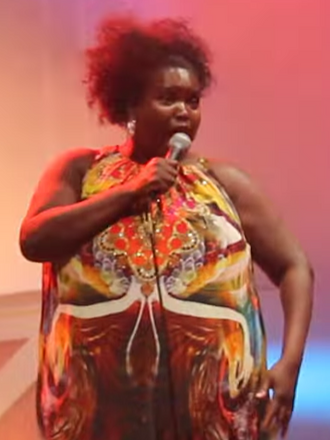

Lisa Hunt
Lisa Hunt is an American Byron Bay-based soul singer. Hunt rose to fame in Italy as an associated act and backup singer of Zucchero Fornaciari, touring with him from the late 1980s until the 2000s. She has been particularly praised for her collaboration on Zucchero's fifth album Oro Incenso & Birra, and for her subsequent performance in Zucchero's first live album Live at the Kremlin, particularly for her solo in the song "Madre dolcissima". Hunt recorded several songs with Fornaciari, including "Something Strong", from the soundtrack album Snack Bar Budapest. She has released a total four albums, the first, A Little Piece of Magic, with Polydor.
Complete Discography & Tracklists (3)